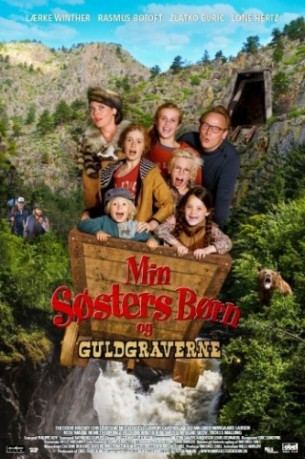

IMDB-Wertung: 5.2 / 10
IMDB-Wertung: 5.2 / 10  Metascore:
Metascore: 
Alternativ: Min søsters børn og guldgraverne
 IMDB-Wertung: 5.2 / 10 Metascore:
Jahr: 2015
Dauer: 80 Minuten
FSK:
Land: Kanada Studio: All Right FilmTonspuren:
Untertitel:
Auflösung: 1080p (1920x1080) Größe: 4925 MB
Genre: Abenteuer
Regisseur: Niels Nørløv Hansen
Drehbuch: Claudia Boderke, Eric Leca, Lars Mering, Michael Obel, Jonathan Vanger
Soundtrack: Eric LeMoyne
Darsteller:
 Nils Hognestad als Alex
Nils Hognestad als Alex Bo Svenson als John
Bo Svenson als John Laura Drasbæk als Marianne
Laura Drasbæk als MarianneDatei: X:\Kinder Filme (G-M)\Kleine Goldgräber - Ein bärenstarkes Abenteuer in Kanada (2015, FSK, 1920x1080).mkv seit 04.09.2018
Festplatte: Kinder-Filme+Trick
 Es gibt insgesamt 84 Filme in der Gruppe 'Kinder Filme (G-M)'
Es gibt insgesamt 84 Filme in der Gruppe 'Kinder Filme (G-M)'